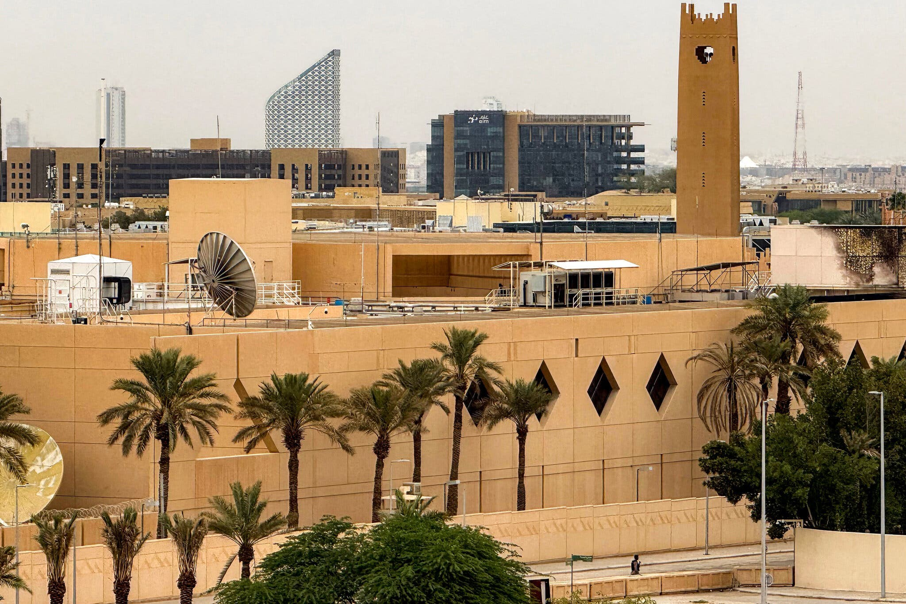

The U.S. government has put employees on heightened alert across the Middle East and moved to reduce personnel levels at embassies and consulates because of intelligence showing Iran is in the advanced stages of planning attacks against Americans, U.S. officials said on Friday.
Intelligence officials raised alarms to Secretary of State Marco Rubio in a memo on Friday that warned about the dangers to State Department employees in the Middle East and other regions, the officials said.
The memo, from Jay Clayton, the director of national intelligence, said that agencies had “received intelligence that Iran has substantially increased efforts to target U.S. personnel. The lethal plotting efforts by the Iranians against U.S. citizens have reached advanced stages in both the Middle East and certain other countries.”

The Trump administration confirmed the memo on Friday night through a U.S. official. The move demonstrated the seriousness with which the U.S. government is taking the threat, officials said. Axios earlier reported on the memo.
U.S. agencies assess that the threat against Americans in the Middle East and several other countries is at the highest level since the start of the war in February, U.S. officials said.
President Trump and top aides have received regular briefings on the rising threats, which go beyond the Middle East, one official said. Analysts have been examining the intelligence on the threats to U.S. officials, including ambassadors, in the past three weeks. Some material indicates Iran may have operatives in the United States, the official said. The Iranian plans also include potential targets in Europe, U.S. officials said.
But another official cautioned that Iran’s ability to carry out attacks in the United States and other territories overseas is limited, and its ambitions to strike are greater than its capability to do so.
The White House did not reply to a request for comment. Mr. Clayton’s office and the C.I.A. declined to comment.
The State Department said through a U.S. official that “when it comes to our staffing at embassies, we constantly evaluate new information about the security environment.”
The official said that the threat of attacks by Houthi forces in Yemen and of “Iranian terror plots targeting U.S. officials” were informing State Department decisions on staffing adjustments for embassies. The missions were already at reduced levels under what the department calls “restricted operating status,” often invoked in conflict zones, the official said.
The alerts over the new threats come after eight months of a war against Iran started by Mr. Trump and Israel that has sent energy prices soaring, roiling economies around the world and eroding Mr. Trump’s approval at home. The United States and Israel have drawn up plans for a new wave of strikes on Iran after the U.S. midterm elections, though Mr. Trump has not made a final decision to carry them out, The New York Times reported on Wednesday.
Mr. Trump has refrained from ordering large-scale attacks on Iran in recent months, but the U.S. military has carried out a blockade of Iranian ports in an effort to keep Iran from selling oil and other energy products on the global market.
Iranian officials have sought different ways to strike back at the United States and its allies, U.S. officials said. In early October, the U.S. military took the extraordinary step of withdrawing all 12 B-1 Air Force bombers from a base in southern England because commanders had received information about Iranian threats to the installation, R.A.F. Fairford.
Mr. Clayton said in his memo to Mr. Rubio on Friday that he was seeking to downgrade the classification around some intelligence so that more U.S. government employees could be informed about what the memo’s subject line called the “lethal plotting against Americans in the Middle East and certain other countries.”
On Wednesday, the State Department ordered the departure of nonessential employees and their families from Saudi Arabia, Tommy Pigott, a department spokesman, said in a statement.
The agency has also been quietly moving personnel in and out of many of the other diplomatic missions in the region. It has designated almost all U.S. missions in the Middle East as being on “restricted operating status,” which gives the department more leeway to adjust staffing levels without putting out notifications.
The drawdown of diplomats and other U.S. government employees at the missions is a direct result of the recent intelligence about Iranian attack plans, U.S. officials said.
After the United States and Israel struck Iran on Feb. 28, the Iranian military retaliated by firing drones and missiles at Arab nations across the Middle East, as well as at Israel.
On March 2, the State Department issued a mandatory departure for nonessential employees at missions in Iraq, Jordan and Bahrain.
Around that time, the department also ordered nonessential personnel and their families in the missions in Saudi Arabia to leave the country because Iran had carried out attacks against the embassy in Riyadh, and on nearby areas.
In the run-up to the war, only two embassies said employees could go on so-called authorized departure, which meant nonessential personnel and family members could leave if they wanted to do so. Those were the embassy in Beirut, which issued the message four days before the war began, and the embassy in Jerusalem, which did so the day before the start of the war.
During periods this summer when the violence ebbed, the State Department told some diplomats they could return to their posts.
The State Department came under intense criticism for not urging the many thousands of U.S. citizens in the region to leave before the start of the war, and for providing limited help to evacuate them once the missiles began flying. The Trump administration and Israel had secretly been planning strikes for many weeks before the start of the assault.